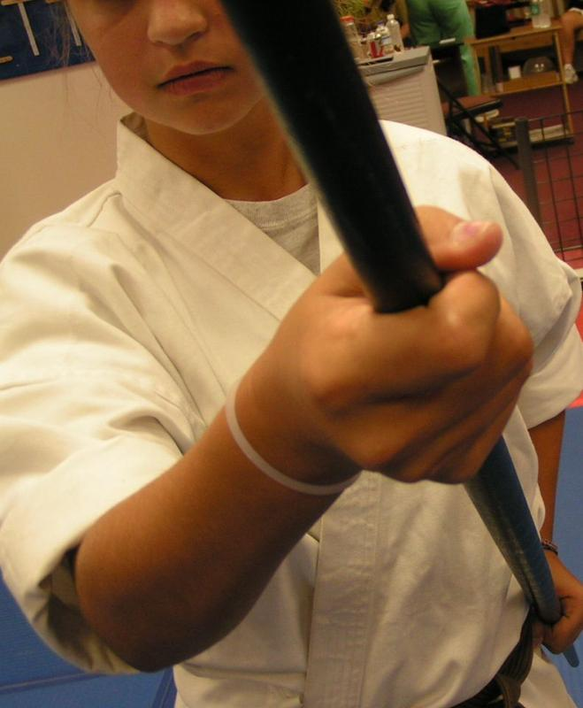
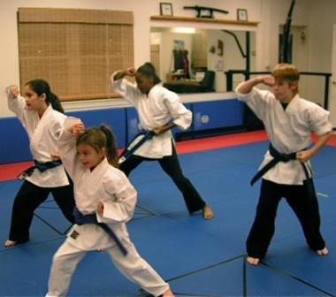
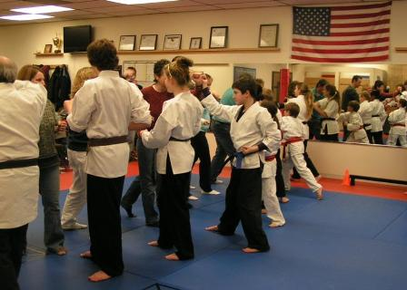

Kihones are the basics. Basics are the building blocks for everything else in the martial arts.
The initial movements for beginners are:
1) Jodan uke = rising block
2) Soto uke = inside block
3) Uchi uki = outside block
4) Gedan uki = downward block
5) Oi zuki = lunge punch
6) Gyazaka zuki = reverse punch
7) Shuto uki/zuki = knife hand block/strike
8) Kibadachi = horse stance
9) Kokutsu dachi = knife hand stance
10) Zenkusudachi = front stance
11) Neikoashi dachi = cat stance
These movements are presented in a variety of ways, stationary, moving forward and back. Individual and partner training drills are performed. All ages study and practice the basics. Without the basics there is nothing else.
As one progresses in their training the basics will also progress. Each student is guided from beginner, to intermediate, and into advanced basics and techniques.
Kata

Katas are prescribed movements. Defending yourself against imaginary attackers on all sides. There are many benefits to kata practice, both for health and movement.
As a starter Katas can be an excellent aerobic exercise. The movements go from fast to slow in a preset timing. Stances of different heights assist in strengthening the legs.
Katas are also excellent in developing and improving balance. The various movements, odd stances, turns, dips, jumps, ect. challenge each student. With time these movements become second nature and a deeper understanding of each form can be attained.
A short list of some of the katas we practice:
Heian Shodan (1)
Heian Nidan (2)
Heian Sandan (3)
Heian Yondan (4)
Heian Godan (5)
Bassadai
Tekki Shodan
Tekki Nidan
Tekki Sandan......
Begin Training Now!

MATC follows the curriculum started by Sensei John Korab passed onto John Mellace who had trained me, Thomas St. Joseph. This curriculum combines traditional training with practical and effective self-defense.
Roughly two thirds of these movements are taken from kata. The other third is taken from various systems. This variety allows each student to find his or her own niche but more importantly, the system promotes success in teaching self-defense.
Our core system of study is Shotokan Karate. Shotokan is a Japanese system of martial arts. This system places particular emphasis on kata and the interpretations of movements (bunkai). This facet of traditional training makes up one third of adult training.
Another facet of study is that of real life self-defense. Scenarios are reviewed on a regular basis. First level training involves set attacks and set defenses. Second level training involves set attacks with several responses. Third level training involves unknown attacks with a variety of defenses. All three levels are intertwined throughout a student's progression to black belt.
A third facet of training combines proper movement and adrenaline drills. This set of drills trains each student how to read a subject. While reading, defensive/ offensive/ evasive movements are studied.
The combination of all of these facets of training creates a complete or full circle approach to training. General class structure involves time dedicated to traditional study as well as time set aside for non-traditional techniques.
MATC MArtial Arts Training Center or Wilmington, Delaware
Sensei Thomas St. Joseph Sama
Located in the Talleyville Towne Shoppes
3610 Silverside Rd
Wilmington, DE 19810
302 477-1090
matcde@verizon.net
Copyright 2013-14 Thomas St Joseph. All Rights Reserved.